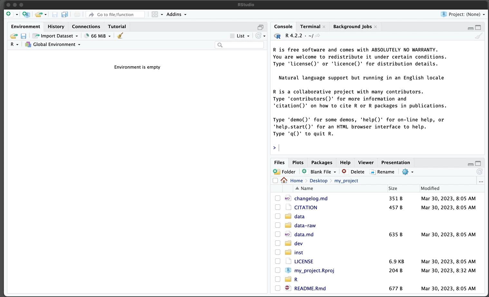

Where do I start?
getting-started.RmdA Google search for the question “where should I start learning R?” will return a deluge of websites, tutorials, YouTube videos and blog posts. These results probably aren’t incorrect, but they’re not likely to list any of the important practices and habits new R users should adopt when beginning their R journey.
gerp was written to help guide new users towards a set
of ‘good enough’ practices that have been shown to help “you get
more done in less time and with less pain.”(1)
New R users often struggle needlessly before discovering these practices
because they’re scattered across multiple textbooks and online
documentation (with some excellent exceptions (2).
Adopting at least a few of these practices will increase your productivity when you’re using R (or any other programming language!).
Outline
This vignette will go over how to install and load the
gerp package, and how to get started with a new
gerp R project.
Practice (prăk′tĭs)
To do or perform habitually or customarily; make a habit of
One of the first practices we’re going to cover is installing and loading packages. R packages are a collection of functions, data, and documentation bundled in a standardized format. R packages are a vital part of the R ecosystem and provide users with a wide range of data analysis, visualization, and modeling tools. Understanding where and how to access them is essential to your early success.
Install a package
R is an open-source programming language, so anyone can create an R package. These packages are typically shared with other R users through online repositories like the Comprehensive R Archive Network (CRAN) or GitHub.
Enter the code below in your R console to download the most recent
version of gerp from GitHub:
install.packages("pak")
pak::pak("mjfrigaard/gerp")Quick start
To create a new gerp project, enter the following code
in your Console (RStudio or Positron):
gerp::grp_create("~/projects/my-project")grp_create() creates the project folder, adds the
gerp files and folders, and opens the project in a new
session. See the Create
gerp projects vignette for more details.
To re-open my project in RStudio, I navigate to the
.Rproj file and double-click on it. In Positron, use
File > Open Folder.

Open gerp project
Good enough practices in scientific computing. Wilson G, Bryan J, Cranston K, Kitzes J, Nederbragt L, et al. (2017) PLOS Computational Biology 13(6): e1005510. https://doi.org/10.1371/journal.pcbi.1005510
What They Forgot to Teach You About R. Jennifer Bryan, Jim Hester